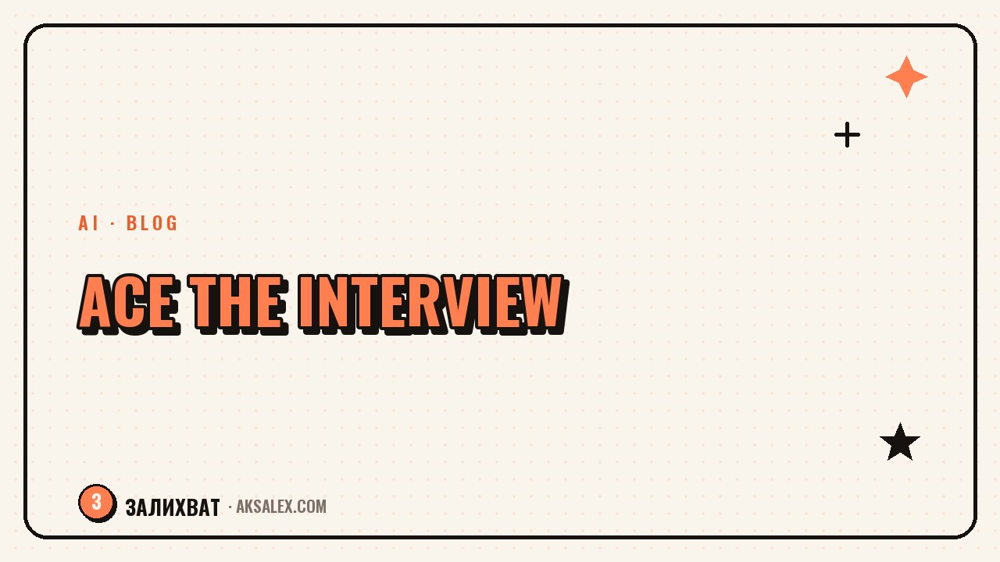

AI for Job Interviews: How to Prepare

Why prepare with AI at all
An interview isn't an exam on facts about yourself, it's a short conversation where you need to deliver a coherent story in minutes: who you are, what you can do, and why they should hire you specifically. The problem is that we rarely put this into words out loud in advance, and under stress even clear thoughts fall apart into "well, I've generally done a bit of everything." AI is good because it never tires of hearing the same story on a loop and can honestly tell you where it sounds vague.
The second advantage is speed. Breaking down a vacancy, writing out likely questions and sketching the structure of your answers by hand takes an hour and a half if you do it thoughtfully. With AI, the same amount of prep fits into 20-30 minutes, and the time freed up is better spent on a live out-loud rehearsal rather than silently reading guides.
When this helps most
- Returning to the job market after a break - parental leave, a career change, a move
- An interview in English or another non-native language
- Technical roles where you have to explain complex things in plain language
- Little time to prepare - the vacancy and the interview on the same day
How to break down the vacancy and build a question list
The first step is not to invent questions off the top of your head, but to pull them out of the vacancy text itself. Copy the job description and ask the AI to highlight the key requirements and responsibilities, then build a list of questions that logically follow from each point. That ties your prep to the specific role, not to generic templates from the internet.
Next, add context about yourself: your resume, a couple of paragraphs about your last job, real tasks and results. Ask the AI to match your experience against the vacancy's requirements and flag where the connection is obvious and where you'll have to explain it separately. That's the foundation of your future answers - not a memorized script, but an understanding of which of your facts answer which of the employer's questions.
A working prompt for breaking down a vacancy
"Here's the vacancy text [paste] and my resume [paste]. Build a list of 12-15 likely interview questions for this role and split them into groups: about experience, about skills, about motivation, and awkward questions. For each one, suggest which facts from my resume are worth mentioning in the answer."
Practicing tough and awkward questions
Some questions stump a lot of people not because there's no answer, but because it's awkward to put it into words out loud: why you're leaving your current job, your salary expectations, your weaknesses. AI is handy for exactly these - ask it to play the role of a recruiter and ask the questions one at a time, while you speak your answers out loud or type them as you would in a real interview.
After each answer, ask for feedback: what sounds convincing and what sounds like an excuse. Separately, ask the AI to come up with a follow-up question as if it were a nitpicky interviewer - it's usually exactly these follow-ups that catch you off guard in a real interview, and practice removes the element of surprise.
A common piece of recruiter advice: the answer doesn't have to be perfect, but the logic has to be clear - an interviewer forgives rough phrasing, but not the sense that the candidate doesn't know what they want.
Three questions to rehearse first
- "Tell me about yourself" - your story in 60-90 seconds, not a retelling of the whole resume
- "Why are you leaving your current job" - without criticizing your former employer
- "What are your salary expectations" - with a range, not a single number
Which AI to choose for prep
Almost any text AI will do for this task, but they behave differently in interview-dialogue mode and handle Russian differently. Below is a comparison on the parameters that matter for interview prep specifically, not for general tasks.
| Service | Free access | Russian language | Playing the interviewer role |
|---|---|---|---|
| ChatGPT | Yes, with limits | Good | Holds the role well in dialogue |
| Claude | Yes, with limits | Good | Detailed feedback on answers |
| YandexGPT (Alice) | Yes | Excellent | Simpler phrasing, fewer nuances |
| GigaChat | Yes | Excellent | Basic role-play mode |
If the interview is in English, it's worth running the dialogue with the AI in that language right away - that way you train the content of your answers, the phrasing and, if you say them out loud, the pronunciation all at once.
What not to do with AI during the interview itself
The temptation to hook up prompts right there on the call is understandable, especially in a technical interview. But it's a risky strategy: the pause before an answer, the odd intonation of reading off a screen, and the mismatch between spoken and written style are picked up by an experienced interviewer almost every time. If the substitution is noticed, trust in the candidate is lost entirely, even if the rest of the conversation went well.
A more workable option is to use AI before and after the meeting: before - for prep, after - to review which questions caught you off guard and refine your answers to them before the next interview. That way your preparation accumulates from interview to interview instead of becoming a one-off cheat sheet.
What you can do without risk
- Prepare the structure of your answers in advance, before the call
- Break down the vacancy and the company's requirements
- Draft the questions you'll ask yourself at the end of the interview
- Review a past interview and prepare for the next one
A prep checklist for the evening before the interview
If time is short, don't try to rework your whole experience from scratch - focus on a few concrete steps that give the biggest result for the least time.
- Break down the vacancy and write out 10-15 likely questions
- Match the vacancy's requirements to real facts from your experience
- Rehearse your answer to "Tell me about yourself" and the awkward questions out loud
- Prepare 3-4 questions of your own about the team, tasks and processes
- Get enough sleep - a tired voice sounds unsure, even with a strong answer written out
Frequently Asked Questions
Can I use AI right during a video call with a recruiter?
Technically yes, but the risk of it being noticed is high - the pause before an answer and the intonation of reading off a screen give the substitution away. It's more reliable to use AI before the interview and lean on already-rehearsed answers during the call itself.
Which AI is best for prep in Russian?
For Russian-language dialogue, YandexGPT and GigaChat work well, while for more flexible interviewer role-play, ChatGPT and Claude are better. The difference isn't critical - pick the service you already use and whose interface you're used to.
How much time should I budget for AI prep?
Breaking down the vacancy and building the question list takes 15-20 minutes, plus another 20-30 minutes to rehearse answers out loud. All in, thorough prep takes about an hour, which fits comfortably into one evening before the interview.
Will the recruiter notice that I prepared with AI?
No, as long as you actually spoke your answers and made them your own rather than memorizing them word for word. Preparing with AI is no different from preparing with a friend acting as a tutor - the only difference is who asked the practice questions.
Should I write answers out word for word and memorize them?
It's better to learn the structure and supporting facts rather than exact phrases - a word-for-word memorized text sounds unnatural and falls apart at the slightest follow-up. The structure, by contrast, holds and lets you calmly rebuild your answer on the fly.
Enjoyed this one? Here's what to read next. Building infographics for a marketplace listing with a neural network: from a list of facts to a finished layout.
Read the article →not by hand